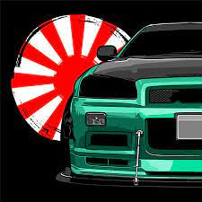

La conducción sostenible va más allá de elegir el coche adecuado. Descubre información
sobre todos los aspectos, desde los valores de reventa y
las tasas de sustitución de baterías hasta las ventajas y
desventajas de cada tipo de vehículo ecológico.

¿Qué son los coches JDM?
Si alguna vez has visto un Toyota Supra con matrícula japonesa o
un Civic EG luciendo un alerón GT, sabrás que los JDM tienen un
aura especial. Japanese Domestic Market es la etiqueta que reciben
los modelos diseñados para Japón y que, por su robustez,
estilo y margen de personalización, han conquistado aficionados.
Conoce a Uriel Alejandro
Uriel Alejandro es un DBA con una pasión por la investigación y la innovación.
Con una sólida formación académica y una experiencia significativa en el campo,
Uriel ha contribuido a numerosos proyectos de investigación que han tenido un impacto
positivo en la comunidad académica y más allá.